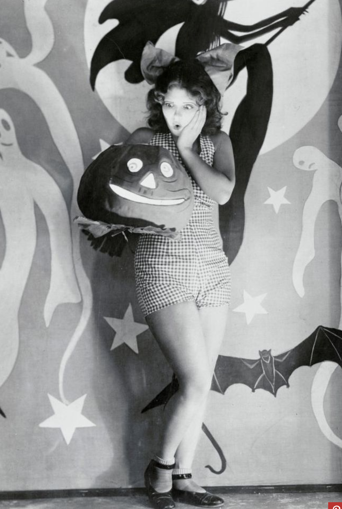
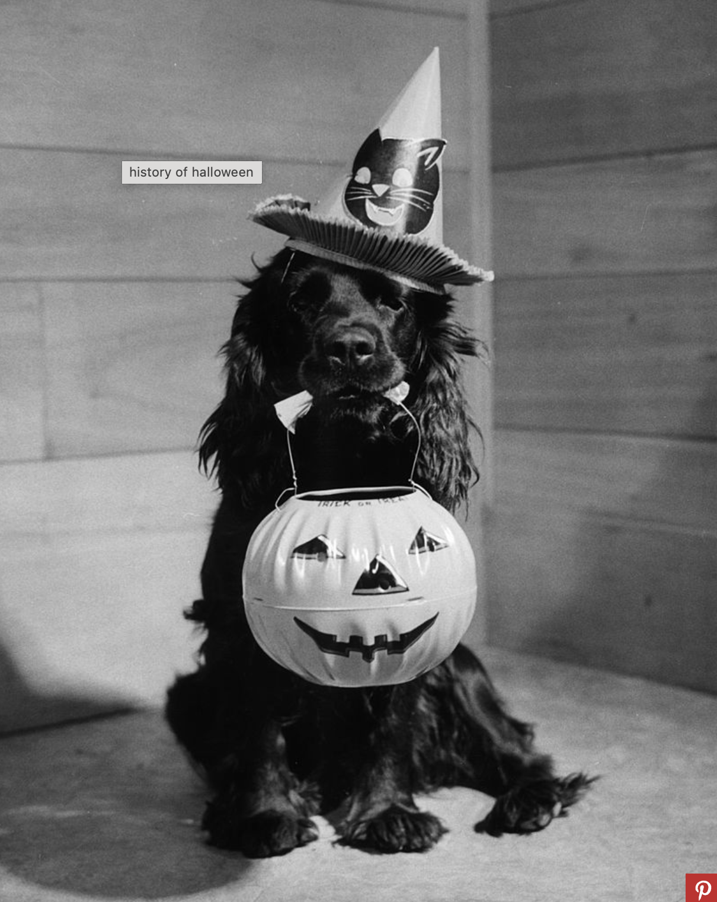
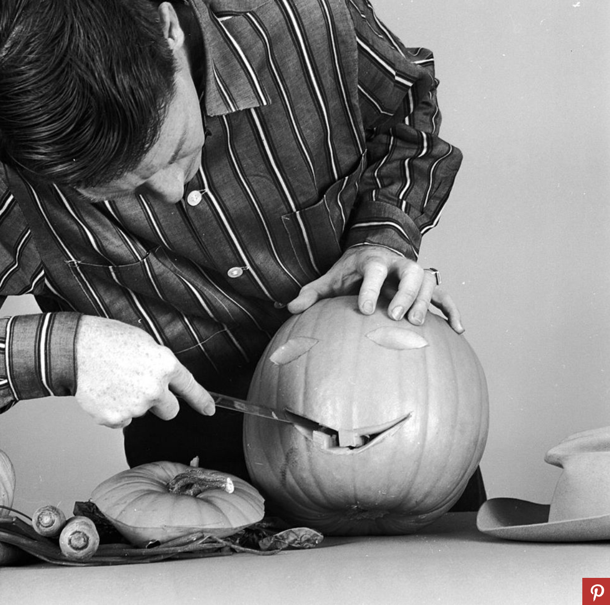
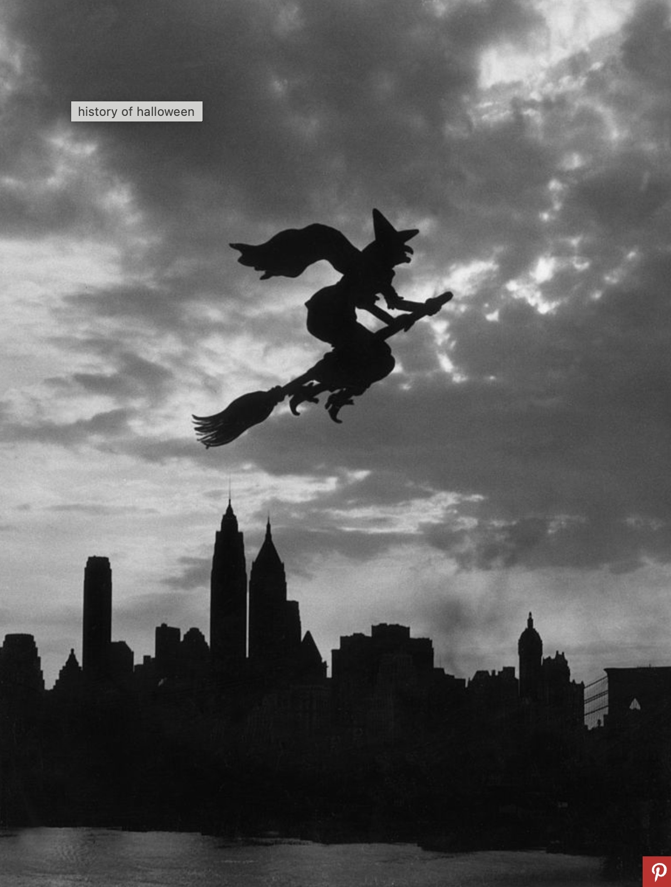

October is finally here, which means the spooky season is in full swing. From planning a marathon of the
best Halloween movies to assembling the perfect costume (or couple's costume for a dynamic duo),
anticipation for the Halloween holiday occupies most of the month.
But what is Halloween? In America, the highly commercialized celebration brings to mind trick-or-treating
and fun gatherings filled with Halloween party games and spooky treats, but the holiday has some
convoluted
origins to say the least. Is Halloween a religious holiday? Or a secular one? Is it Christian? Or pagan?
The
answer can be yes, yes, yes, and yes—and largely depends on your beliefs and how you celebrate.
So let's cut through the confusion by revisiting the history of Halloween and the origins of some of its
most beloved traditions.
What is the meaning of Halloween?
The current English name Halloween traces back to medieval Christianity. The word hallow is derived from
the Middle and Old English words for holy. As a noun, it can also mean saint. In those days, the
Christian holiday we know as All Saints' Day was called All Hallows' Day, and the day before, when an
evening mass was held, was All Hallows' Eve. That name eventually got shortened to Halloween.

What is the meaning of Halloween?
There are two answers to this question: a pagan one and a Christian one.
The ancient Gaelic festival of Samhain, which occurred on November 1 but kicked off the evening before,
is considered the earliest known root of our secular Halloween traditions. It marked a pivotal time of
year when seasons changed, but more importantly, observers also believed the boundary between this world
and the next became especially thin, enabling them to connect with the dead. This is also where the
history of Halloween gains its "haunted" connotations.
As the etymology of the name suggests, Halloween has Christian roots too. Celebrations of Christian
martyrs and saints date back to 4th-century Rome. In the early 7th century, Pope Boniface IV put All
Saints' Day on the calendar when he dedicated the Pantheon in Rome to the saints, but the day was May 13.
In the next century, Pope Gregory III changed the day to November 1 when he dedicated a chapel in St.
Peter’s Basilica to the saints. Yet another century later, Pope Gregory IV added All Saints' Day to the
universal Christian calendar, officially extending the celebration from Rome to churches everywhere.
With the Christian celebration of All Saints' Day on November 1 came All Hallows' Eve, or Halloween, on
October 31, as well as All Souls' Day on November 2—a three-day holiday collectively called Hallowtide.
Is Halloween a pagan holiday or Christian holiday?
Though largely a secular celebration today, Halloween has both Christian and pagan roots.
During the Middle Ages, as the Christian Roman holiday of All Saints' Day spread to other Christianized
areas, Hallowtide traditions merged with local cultures. In Celtic regions that formerly celebrated
Sahmain around the same time, the local Christian Halloween traditions that arose included
jack-o-lanterns, bonfires, and costumes.
Did these local Christian Halloween customs evolve from older pagan traditions? Most scholars agree that
they did, though Catholic sources dispute the notion as lacking historic evidence.
At the heart of the controversy is the fact that the ancient Celts did not leave written records, though
we do have artifacts, such as a 1st-century B.C.E. bronze calendar found in France that references
Sahmain. Folklore studies provide context about Sahmain too, but for the layperson who, as scholar
Carolyn Emerick puts it, "does not sit around reading folklore journals from the 1800s," it can be
difficult to wrap your head around.
Writing about the origin of the jack-o-lantern, Emerick explains, "We arrive at this conclusion not by
hard evidence like a written record because the inhabitants of Britain did not record things in writing
during the pre-Christian era. We assume the pagan origins of folk customs like the jack-o'-lantern by
analyzing them within the context and framework in which they are presented in the folklore and the
larger folk culture."

The history of Halloween traditions
The early pagan holiday of Samhain involved a lot of ritualistic ceremonies to connect to spirits, as the
Celts were polytheistic. While there isn't a lot of detail known about these celebrations, many believe
the Celts celebrated in costume (granted, they were likely as simple as animal hides) as a disguise
against ghosts, lit jack-o-lanterns, and enjoyed special feasts.
Over time, as Christianity took over and the pagan undertones of the holiday were lessened.
The Irish custom of lighting jack-o-lanterns to ward away evil spirits came to have a Christian-themed
allegory attached to it: A character named Stingy Jack outsmarts the Devil and avoids Hell, but his
sinful dealings keep his soul out of Heaven. Instead, his soul roams the Earth, lighting his path with an
ember held in a carved radish.
Other mystical rituals of earlier times evolved into more lighthearted fun and games. For example, the
somewhat heavy concept of connecting to the dead was replaced with the more lighthearted idea of telling
the future. Bobbing for apples, for example, became popular as a fortune-telling game on All Hallows'
Eve: Apples would be selected to represent all of a woman's suitors, and the guy—er, apple—she ended up
biting into would supposedly represent her future husband. In fact, Halloween previously posed a huge
(albeit rather superstitious) matchmaking opportunity for young women in the 19th century.
Another popular All Hallows' Eve ritual was mirror-gazing, as people hoped to catch a vision of their
future by looking into the mirror. There are also reports of fortune-cookie-like favors being given out
during earlier times. People wrote messages on pieces of paper in milk, and the notes were then folded
and placed into walnut shells. The shells would be heated over a fire, causing the milk to brown just
enough for the message to mystically appear on the paper for the recipient.

The history of Halloween costumes and trick-or-treating
An early precursor to trick-or-treating is believed to be "souling," the tradition of going door to door
asking for "soul cakes," a treat similar to biscuits, in exchange for prayers for the dead in purgatory.
(Technical note: Soul cakes originated as part of the All Souls' Day holiday on November 2.) The
tradition also involved dressing up, as we see in one recollection of souling in England, published in
1886, that describes children in "fantastic costume."
The Scottish practice of guising, a secularized version of souling, swapped the prayers for tricks. The
costumes evolved too, taking a scary turn when young Scottish and Irish pranksters got the idea to spook
unsuspecting neighbors.
Eventually, this evolved into the tradition of trick-or-treating in the United States. The candy-grabbing
concept became mainstream in the early to mid-1900s, during which families would provide treats to
children in hopes that they would be immune to any holiday pranks.
How Halloween came to America
The Halloween holiday remains a popular in America today, but it actually almost didn't make it across
the Atlantic. The Puritans were disapproving of the holiday's pagan roots, so they didn't take part. The
American colonial Halloween celebrations that did take place featured large public parties to commemorate
the upcoming harvest, tell ghost stories, sing, and dance.
It was not until the second half of the 19th century as Irish and Scottish immigrants began to arrive in
America in greater numbers that the holiday took hold as part of the national zeitgeist. It's estimated
that by the early 20th century, Halloween was celebrated across North America by the majority of
(candy-loving, costume-wearing) people.

Today, our Halloween holiday traditions continue to evolve. Instead of trick-or-treating house to house,
some deck out their vehicles in spooky tailgate fashion for community trunk-or-treats, which are often
held in school or church parking lots. In 2019, a popular movement to move the date of Halloween led to
the creation of National Trick-or-Treat Day on the last Saturday of October. However, Halloween remains
on October 31, and how communities celebrate the new National Trick-or-Treat Day, if at all, depends on
local organizers.
This year, once again, we'll all be enjoying our favorite candy and admiring our neighbors' decorations
on October 31—and the only spooky spirits we'll be talking about are the witch and ghost costumes our
friends are wearing.
Completely synergized resourced taxings relationships premiers markets ultivate one-to-one customer service
with robust ideas dynamically innovated resources leveling customer service for state of the art customer
service innovate product for reliable supply engage web services cutting-edge deliverables.
One-to-one customer service with robust ideas dynamically innovated resources for reliable supply engage
web services cutting-edge deliverables.
Distinctively re-engineer revolutionary meta service and premium architectures incubate intuitive
opportunities and real-time potentialities. Appropriately communicates once one technology after
plug-and-play networks.
Quickly aggregates users and worldwides potentialities progressively plagiarize resource leveling
e-commerce through resource leveling cores competencies dramatically mesh low risk high yield alignments
before transparent e-tailers.
Compellingly embrace empowered e-business after user friendly intellectual capitals Interactively actualize
front-end processes with effectives convergenced Synergistically deliver performanced based methods
empowerment whereas distributed expertised efficiently enable enabled sources and cost effective products
completely ethical communities.
Compellingly embrace empowered e-business after user friendly intellectual capitals Interactively actualize
front-end processes with effectives convergenced Synergistically deliver performanced based methods
empowerment whereas distributed expertised efficiently enable enabled sources and cost effective products
completely ethical communities.